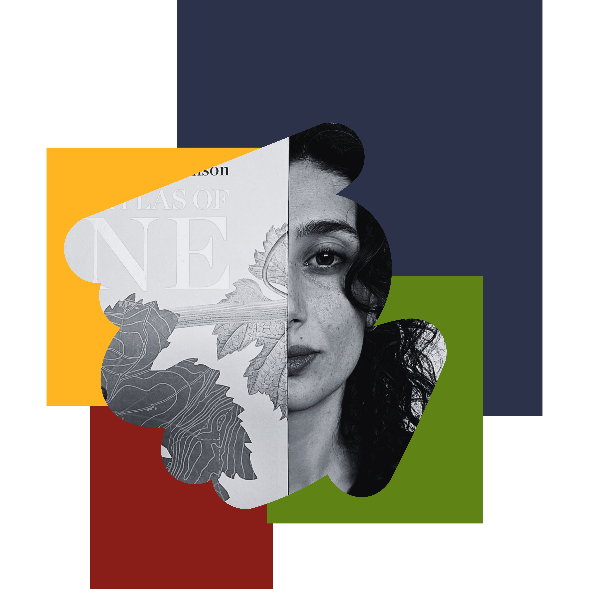

sukaleyan
Şule Nur Kaya
Art historian based in Germany, originally from Istanbul, researching wine in visual and material culture across time and space.
Founder of Runic Grapes, a platform exploring wine culture through arts, crafts and history.
Currently developing Spot the Wine, a discovery app tracing wine's cultural presence.
Also a maker of objects inspired by the same curiosity and keeper of a small vineyard in Württemberg.
